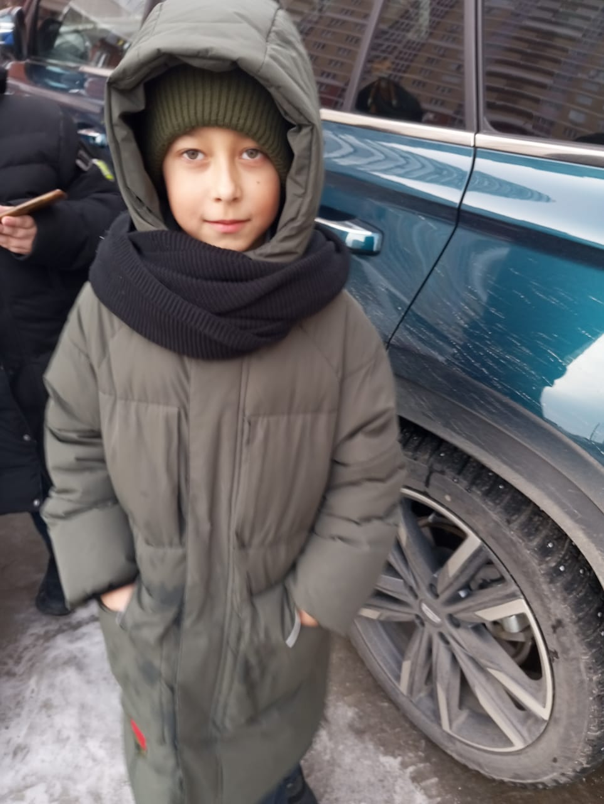

Секреты школы 60
сущности
аномальные предметы
домашняя страница
Сущность 9 Рыгун-пердун
Тип: нефор

Фото сделано: Чурка С.
Описание: Это мальчик - пердун и жоский рыгун. Он умеет рыгать очень сильно, да так что из-за этого школу чуть не
закрыли! В прошлом он был Гришой паркуристом. Этот мальчик выглядит
как нерусский и из-за этого к ниму пристают скинхэды. Сущность может часто говорить что
напишит заяву ментам.